Demo of the P-ESCA model on Gaussian-Gaussian-Bernoulli data sets
This doc is going to show how to simulate Gaussian-Gaussian-Bernoulli (G-G-B) data sets with underlying global, local common and distinct structures according to the ESCA model. After that, these data sets are used to illustrate how to construct a P-ESCA model and the corresponding model selection process. The documents of the used functions can be found by using the command 'doc function name'.
Contents
Add current folder to the path
clear all current_fold = 'C:\researchProjects\toolbox_binary_matrix_factorization'; addpath(genpath(current_fold)); current_fold = pwd; addpath(genpath(current_fold));
How to simulate proper G-G-B data sets
G-G-B data sets are simulated according to the ESCA model. The number of samples is set to 200; the number of the variables in the three data sets are 1000, 500 and 100; the SNRs in simulating the global, local common and distinct structures are set to 1; the marginal probability is set to 0.1 to simulate unbalanced binary data sets; the noise levels (the square root of the dispersion parameter ) are set to 1; the sparse ratio, which is the proportion of 0s in the simulated loading matrix, is set to 0; ntimes_noise, which indicates that the singular values of any specific structure are at least ntimes larger than the singular value of the corresponding noise term, is set to 0. After that, the signals, which are the singular values of the simulated structures, and the noise, which are the singular values of the corresponding noise terms, are shown in Fig.~1. The variation explained ratios of each component for every single data set are shown in Fig.~2.
% % parameters used in the simulation n = 200; % samples ds = [1000, 500, 100]; % number of variables of each data set margProb = 0.1; % used to simulate unbalanced binary data sparse_ratio = 0; % sparse ratio of the loading matrix ntimes_noise = 0; % require signal strength is ntimes larger than the noise noises = [1,1,1]; % noise levels SNRgc = 1; % SNR of the global common structure SNRlc = [1, 1, 1]; % SNRs of the local common structures SNRd = [1, 1, 1]; % SNRs of the distinct structures % data simulation process seed = 1234; % set a seed to reproduce the example, can be not exist [dataSimulation] = dataSimulation_GGB(n,ds,SNRgc,SNRlc,SNRd,... noises,margProb,ntimes_noise,sparse_ratio,seed); X1 = dataSimulation.X(:,1:ds(1)); X2 = dataSimulation.X(:,(ds(1)+1):(sum(ds(1:2)))); X3 = dataSimulation.X(:,(sum(ds(1:2))+1):end); % characterize the singular values of the signal and noise subTitles ={'C123','C12','C13','C23','D1','D2','D3'}; % form the block sparse pattern blocks_sparse_index = cell(7,1); blocks_sparse_index{1} = 1:sum(ds); % C123 blocks_sparse_index{2} = 1:sum(ds(1:2)); % C12 blocks_sparse_index{3} = [1:ds(1), (sum(ds(1:2))+1):sum(ds)]; % C13 blocks_sparse_index{4} = (sum(ds(1))+1):sum(ds); % C23 blocks_sparse_index{5} = 1:sum(ds(1)); % D1 blocks_sparse_index{6} = (ds(1)+1):(sum(ds(1:2))); % D2 blocks_sparse_index{7} = (sum(ds(1:2))+1):sum(ds); % D3 figure; for i = 1:7 index_factors = (3*(i - 1)+1):3*i; Theta_factors = dataSimulation.U_simu(:,index_factors)*... diag(dataSimulation.D_simu(index_factors,1))*... dataSimulation.V_simu(:,index_factors)'; index_variables = blocks_sparse_index{i}; Theta_factors = Theta_factors(:,index_variables); E_factors = dataSimulation.E_simu(:,index_variables); subplot(1,7,i); [~,signal_factors,~] = fastSVD(Theta_factors,3); signal_factors = diag(signal_factors); [~,noise_factors,~] = fastSVD(E_factors,3); noise_factors = diag(noise_factors); plot(signal_factors, '-o'); hold on; plot(noise_factors, '-o'); hold on; title(subTitles{i}); if (i==1), ylabel('singular value'); xlabel('components'); end; end snapnow disp(['Fig.~1: The singular values of the signal (blue dots),'... 'of the noise (red dots).']); % characterize the variation explained by each component for every data set figure elementLabels = arrayfun(@(x){sprintf('%0.1f%%',x)},... dataSimulation.varExpPCs_simu(1:3,:)); colLabels = arrayfun(@(x){sprintf('%0.2f%%',x)},... dataSimulation.varExpTotals_simu); heatmap(dataSimulation.varExpPCs_simu(1:3,:), ... 1:size(dataSimulation.varExpPCs_simu,2), colLabels,... elementLabels, 'ShowAllTicks', true, 'Colormap', 'red',... 'Colorbar', true); title('true variation explained for each data set'); snapnow disp('Fig.~2: Variation explained ratios for the three simulated data sets.');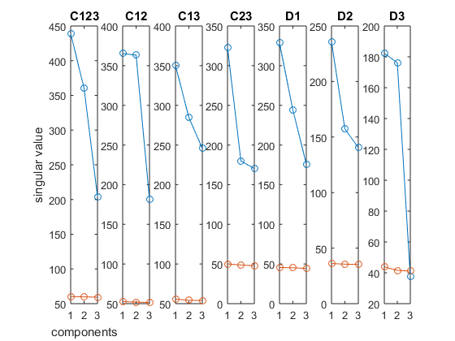
Fig.~1: The singular values of the signal (blue dots),of the noise (red dots).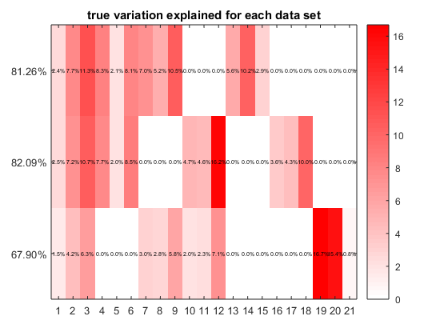
Fig.~2: Variation explained ratios for the three simulated data sets.
How to estimate the dispersion parameter for each data set
For quantitative data set  and 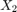, the dispersion parameters are estimated using the PCA model. Details can be found in the supplementary information of the paper. The CV error plots of the the rank selections are shown in Fig.~3 and Fig.~4. The dispersion parameters of the binary data is 1. The estimated dispersion parameters for the three data sets are shown in alphas.
and 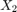, the dispersion parameters are estimated using the PCA model. Details can be found in the supplementary information of the paper. The CV error plots of the the rank selections are shown in Fig.~3 and Fig.~4. The dispersion parameters of the binary data is 1. The estimated dispersion parameters for the three data sets are shown in alphas.
% % data sets and data types dataSets = {X1,X2,X3}; dataTypes = {'Gaussian','Gaussian','Bernoulli'}; Rs = 5:15; % searching range K = 3; % K times repetations alphas = zeros(1,3); % dispersion parameters ranks_estimation = zeros(3,K); for (i=1:3), X_i = dataSets{i}; dataType_i = dataTypes{i}; if strcmp(dataType_i, 'Gaussian'), [est_mean,~,R_CV] = alpha_estimation(X_i,K,Rs); alphas(i) = est_mean; ranks_estimation(i,:) = R_CV; snapnow disp(sprintf(['Fig.~' num2str(i+2) ': CV error based model selection'... ' for the ' num2str(i) '-th data set'])); else alphas(i) = 1; end end alphas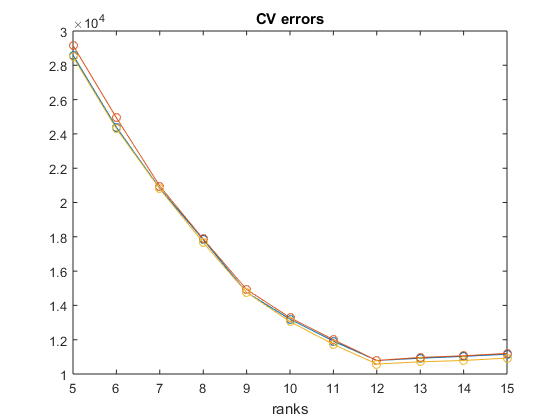
Fig.~3: CV error based model selection for the 1-th data set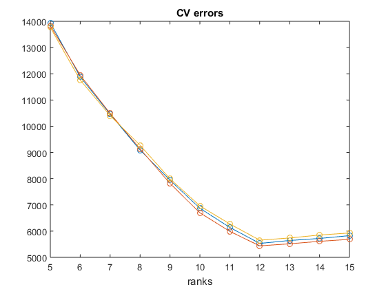
Fig.~4: CV error based model selection for the 2-th data set
alphas =
0.9864 0.9962 1.0000
How to set the parameters for the P-ESCA model
The following parameters are used for the P-ESCA model selection. The meaning of these parameters can be found in the document of the function.
fun = 'GDP'; gamma = 1; % GDP penalty function % fun = 'lp'; gamma = 0.5; % Lq penalty, q = 0.5 % fun = 'lp'; gamma = 1; % Lq penalty, q = 1, group lasso penalty opts = []; opts.gamma = gamma; % hyper-parameter for the used penalty opts.random_start = 0; opts.tol_obj = 1e-6; % stopping criteria opts.maxit = 500; opts.alphas = alphas; opts.R = 50; % components used opts.threPath = 0; % generaint thresholding path or not opts.type = 'L2'; % induce group sparsity %opts.type = 'L1'; % induce group sparsity + slight elementwise sparsity %opts.type = 'biLevel'; % induce group sparsity + elementwise sparsity opts.quiet = 1; % don't show the progress when running the algorithm
The model selection process of the P-ESCA model
At first, we need to find the proper searching ranges for tuning  for Gaussian data sets and 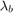 for Bernoulli data sets. After that, we first fix to a small value and tune , then we will fix and tune . Fig.~5 shows how the CV errors change with respect to the tuning parameters when the P-ESCA model with a group GDP penalty is used. The red cross marker indicates the point corresponding to the minimum CV error.
for Gaussian data sets and 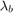 for Bernoulli data sets. After that, we first fix to a small value and tune , then we will fix and tune . Fig.~5 shows how the CV errors change with respect to the tuning parameters when the P-ESCA model with a group GDP penalty is used. The red cross marker indicates the point corresponding to the minimum CV error.
% find a proper searching range of lambda opts.maxit = 50; lambda_g = 1; % tuning parameter for Gaussian data sets lambda_b = 5; % tuning parameter for Bernoulli data sets lambdas = [ones(1,2)*lambda_g, lambda_b]; [~,~,~,~,out] = ESCA_group_concave(dataSets,dataTypes,lambdas,fun,opts); %out.varExpPCs(1:3,:) % specify the searching range of lambda opts.maxit = 500; n_treis = 30; lambda_g0 = 1; lambdas_md_g = logspace(log10(1),log10(500),n_treis); % lambda_g lambdas_md_b = logspace(log10(1),log10(100),n_treis); % lambda_b % model selection process [cvErrors_g,cvErrors_b,lambdas_opt,opts_init] = ... ESCA_modelSelection_KCV_twoSteps_bg(dataSets,dataTypes,... lambda_g0,lambdas_md_g,lambdas_md_b,fun,opts); % how CV errors change with respect to the value of lambda_b and lambda_g figure subplot(1,2,1); plot(log10(lambdas_md_b), cvErrors_b(:,2:3), '-o'); xlabel('log10(\lambda_b)'); ylabel('CV error'); legend({'X_2','X_3'},'Location','best'); title('Bernoulli data sets'); subplot(1,2,2); plot(log10(lambdas_md_g), cvErrors_g(:,1), '-o'); xlabel('log10(\lambda_g)'); ylabel('CV error'); legend({'X_1'},'Location','best'); title('Guassian data sets'); snapnow disp(sprintf(['Fig.~5: How CV errors change during the model selection ' ... 'process of the P-ESCA model.']));
less than 3 iteration is used. less than 3 iteration is used. less than 3 iteration is used. less than 3 iteration is used. less than 3 iteration is used. less than 3 iteration is used. less than 3 iteration is used. less than 3 iteration is used. less than 3 iteration is used. less than 3 iteration is used. less than 3 iteration is used. less than 3 iteration is used. less than 3 iteration is used. less than 3 iteration is used. less than 3 iteration is used. less than 3 iteration is used.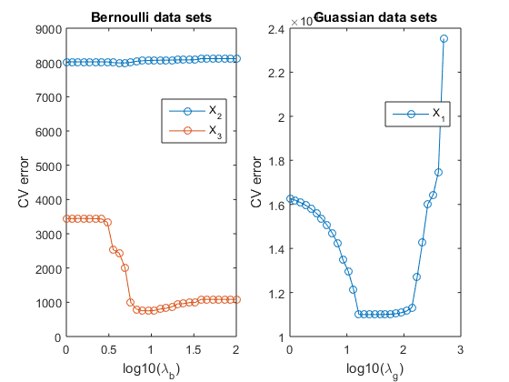
Fig.~5: How CV errors change during the model selection process of the P-ESCA model.
How to fit the final model
After selecting the model with the minimum CV error, the selected model is re-fitted on the full data set with the selected value of 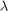 and the outputs of the selected model as the initialization. The RV coefficients in estimating the global common (C123), local common (C12, C13, C23) and distinct structures (D1, D2, D3) are shown as RVs_structures. And the corresponding rank estimations of these structures are shown as Ranks_structures. The RMSEs in estimating the simulated 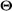, 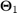, 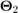 and 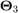 and  are shown as RMSEs_parameters. Fig.~6 shows the variation explained ratios computed using the estimated parameters for the three data sets.
are shown as RMSEs_parameters. Fig.~6 shows the variation explained ratios computed using the estimated parameters for the three data sets.
% % parameters used to fit the final model opts_inner = opts_init; opts_inner.tol_obj = 1e-8; opts_inner.maxit = 5000; lambdas = lambdas_opt; [mu,A,B,S,out] = ESCA_group_concave(dataSets,dataTypes,lambdas,fun,opts_inner); % evaluate the performance of the final model [RVs_structures,Ranks_structures,RMSEs_parameters] = ... ESCA_evaluation_metrics(mu,A,B,S,ds,dataSimulation); RVs_structures Ranks_structures RMSEs_parameters % estimated variation explainted ratios % index out different structures C123_index = sum(S,1)==3; C12_index = sum(S([1,2],:),1)== 2 - C123_index; C13_index = sum(S([1,3],:),1)== 2 - C123_index; C23_index = sum(S([2,3],:),1)== 2 - C123_index; D_index = sum(S(:,:),1) == 1; D1_index = D_index & sum(S(1,:),1) == 1; D2_index = D_index & sum(S(2,:),1) == 1; D3_index = D_index & sum(S(3,:),1) == 1; varExpPCs = out.varExpPCs(1:3,:); varExpTotals = out.varExpTotals(1:3); varExpPCs_plots = [varExpPCs(:,C123_index), varExpPCs(:,C12_index),... varExpPCs(:,C13_index),varExpPCs(:,C23_index), ... varExpPCs(:,D1_index), varExpPCs(:,D2_index),... varExpPCs(:,D3_index)]; % variation explained ratios figure elementLabels = arrayfun(@(x){sprintf('%0.1f%%',x)}, varExpPCs_plots); colLabels = arrayfun(@(x){sprintf('%0.2f%%',x)}, varExpTotals); heatmap(varExpPCs_plots, 1:size(varExpPCs,2), colLabels, elementLabels,... 'ShowAllTicks', true, 'Colormap', 'red',... 'Colorbar', true); title('estimated variation explained'); xlabel('components'); snapnow disp('Fig.~6: The estimated variation explained ratios.');
RVs_structures =
0.9812 0.9773 0.9932 0.9957 0.9935 0.9930 0.9235
Ranks_structures =
2 4 3 3 3 3 2
RMSEs_parameters =
0.0244 0.0135 0.0139 0.1002 0.0080
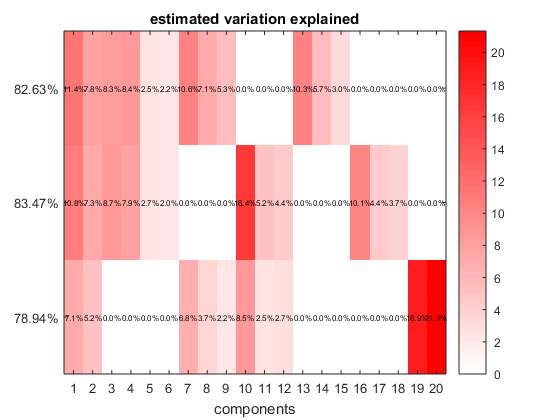 Fig.~6: The estimated variation explained ratios.